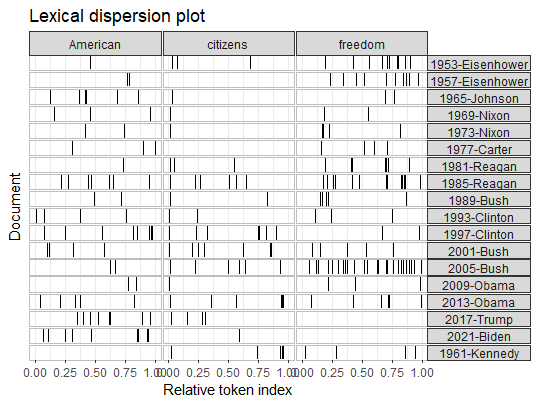
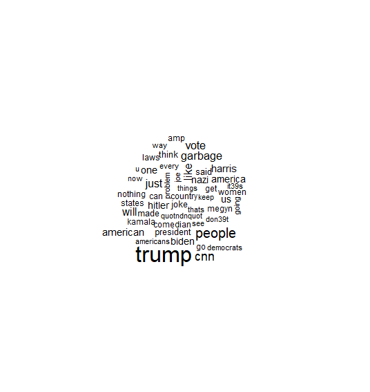
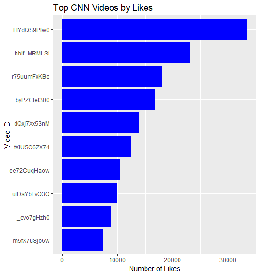
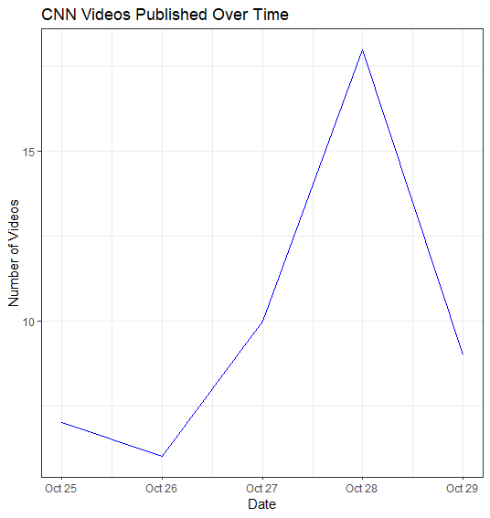

EPPS6302
Methods of Data Collection and Production
Assignment 2:

R-package Google trends data vs. downloaded data on Google trends.
Differences: Downloaded Google trends data is easier for a quick look, and gives daily or weekly intervals. It is less adjustable with the time frame. “gtrendsR” package allows for more in-depth parameters of the search with time intervals and interest over time. The package allows for in-depth research of the data and data manipulation.
Assignment 3:
Text Analysis

Analyze Biden-Xi Summit data: The key terms in the topic are china, america, Biden, Xijinping suggesting a focus on China-U.S. relations. Fentanyl and Corona-virus were also key health issues during this discussion surrounding China and U.S. trade. There is a cluster of topics surrounding human rights, uyghurgenocide, Tibetans and uyghurs. This cluster divides from Biden but contains central issues surrounding Tibetans and Xi for human rights. Taiwan, USA, US and CCP are peripheral nodes. Taiwan comes from China giving relevance to U.S.-China relations. CPP divides from Xijinping, given its location, it means the topic is not a dominant topic surrounding the US-China discussion.

Analyze U.S. presidential inaugural speeches: The use of “American” throughout the speeches is a fairly common used word but have varying distributions. Clinton, Trump and Biden have dense clusters of the usage of the word towards the end of their speech. This could be in part to address a focus on national rhetoric. The use of the word “Citizens” is mostly used as an address to people in the beginning of speeches indicated by the first mark towards the beginning of most of the speeches. In earlier speeches, the use of the word is less prominent, showing a shift in addressing people as active participants in government. The use of “freedom” is used fairly frequently. Bush and Reagan show heavy usage, indicating their political ideologies and focus on liberty during their presidency. In more recent speeches, Obama, Trump and Biden, use the word less frequently, showing a shift in the political focus.
What is Wordfish? Wordfish is a Poisson scaling model of one-dimensional document positions. It allows for scaling documents without the need for reference scores/texts and uses unsupervised text scaling methods. It estimates the positions of documents based on observed word frequencies.
Assignment 4:
Web Scraping
Using rvest to scrape Wikipedia page of foreign reserve data. This is how I modified the code to scrape the second table in the wiki page.
#scrape second table assignment 4
url <- 'https://en.wikipedia.org/wiki/List_of_countries_by_foreign-exchange_reserves'
#Reading the HTML code from the Wiki website
wikiforreserve <- read_html(url)
class(wikiforreserve)
currencyex <- wikiforreserve %>%
html_nodes(xpath='//*[@id="mw-content-text"]/div[1]/table[2]') %>%
html_table()
class(currencyex) # Why the first column is not scrapped?
curre <- currencyex [[1]][,c(1, 2,3,4,5,6,7,8,9,10,11,12)]
names(curre) <- c("Quarter", "USD", "EUR", "JPY","GBP", "CAD","RMB", "AUD", "CHF", "OtherCurrencies", "UnallocatedReserves", "Total")
write.csv(curre, "currencycomp.csv", row.names = FALSE)The scraped data has some data inconsistency with how it is pulled from the URL. The table column names has be renamed or sometimes re-done to correct class. With the downloading from GovInfo, there has been delays with how you pull to avoid being flagged for suspicion. This makes the process slower, especially when downloading large data sets. With the Wikipedia data, the best way to improve is improving data type conversation.
Assignment 5:
YouTube API data on CNN channel

This a word cloud of the most commented words on CNN’s YouTube videos. There is frequent uses of polarized words such as “joke” and “garbage” indicating negative opinions regarding the topics. There are mentions of “Trump”, “Harris” and “Biden” showing prominent discussion on these political figures during the election, specifically with the words, “vote” and “president”. There is strong viewer engagement and emotional responses to CNN’s content.

This shows CNN’s video likes. The Video ID’s are provided but not the title so it is harder to infer specific topics and their engagement to audiences. However, we can still tell there is engagement in their videos through their likes and the audience stays interested. The high like count suggests that the content resonates with the viewers and may align with the viewer’s beliefs. Given the polarized comments, some videos may show public interest on the covered topics.

The peaks show an increased of published videos during the time frame. October 28 has a peak in publishing which might correlate with breaking news or significant political events. Lower publishing numbers can reflect a period with fewer newsworthy events or when CNN focuses on fewer in-depth reports. With the spikes, the higher viewer demand during news cycle. CNN increases their content output to cover stories or maintain viewer interest, which can correlate with publishing frequency.
Final Project:
Resources:
https://rvest.tidyverse.org/ : scraping web data through R
https://www.tidytextmining.com/ : text mining with R
https://tutorials.quanteda.io/introduction/ : text analysis with R, Text data